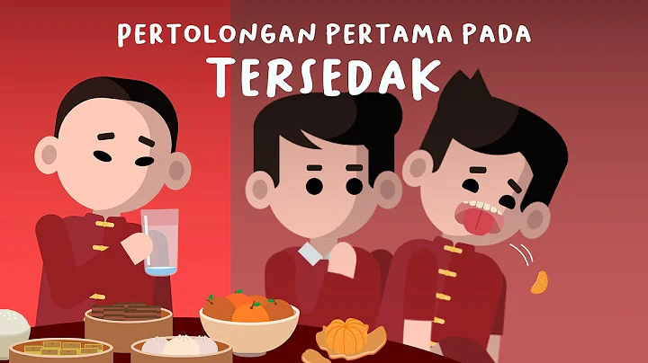
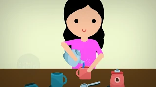
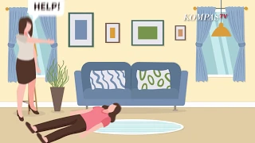
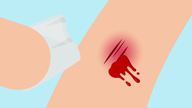

| Education video |
|---|
Mengatasi TersedakTersedak terjadi ketika ada benda atau makanan yang tersangkut di tenggorokan atau kerongkongan, sehingga menutup aliran udara. Jika aliran udara tertutup, tersedak dapat menjadi keadaan darurat medis dan membutuhkan penanganan yang mendesak. source: Youtube "Neuron" |
Pertolongan Pertama Luka Bakar!!Kerusakan pada kulit atau jaringan dalam yang disebabkan oleh sinar matahari, cairan panas, api, listrik, atau bahan kimia. Tingkat keparahan kebanyakan luka bakar ditentukan berdasarkan ukuran dan kedalaman luka bakar. Namun demikian, luka bakar akibat sengatan listrik lebih sulit didiagnosis karena dapat menyebabkan cedera yang signifikan di bawah kulit tanpa menunjukkan tanda-tanda kerusakan apa pun di permukaan. Gejala berkisar dari sedikit perasaan tidak nyaman hingga keadaan darurat yang mengancam jiwa, tergantung pada ukuran dan kedalaman (derajat) luka bakar. source Youtube Ini "Kata Dokter" |
Berikut Pertolongan Pertama pada Orang PingsanUmumnya, pingsan terjadi karena tekanan darah menurun secara tiba-tiba sehingga aliran darah dan suplai oksigen ke otak berkurang. Sejumlah kondisi yang dapat memicu pingsan adalah stres, ketakutan, cuaca yang terlalu panas, sengatan listrik (kesetrum), dan perubahan posisi secara tiba-tiba source Youtube "KOMPASTV" |
Cara Membersihkan Luka!Saat Anda terluka, Anda harus segera mengobati luka tersebut. Namun, sebelum mengobatinya, Anda juga harus membersihkan luka tersebut terlebih dahulu. Pasalnya, luka yang tidak dibersihkan berpotensi menyebabkan infeksi di kemudian hari. source Youtube "Ini Kata Dokter" |
next time we can update |